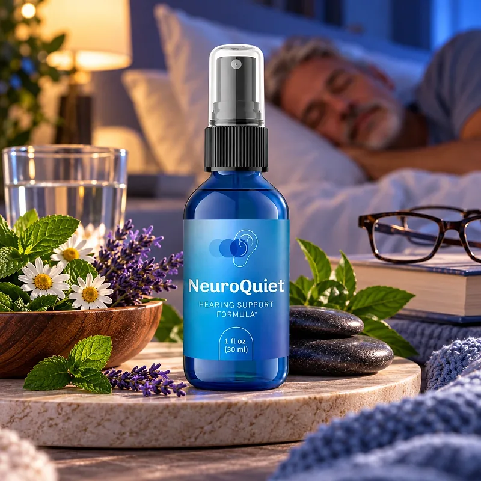
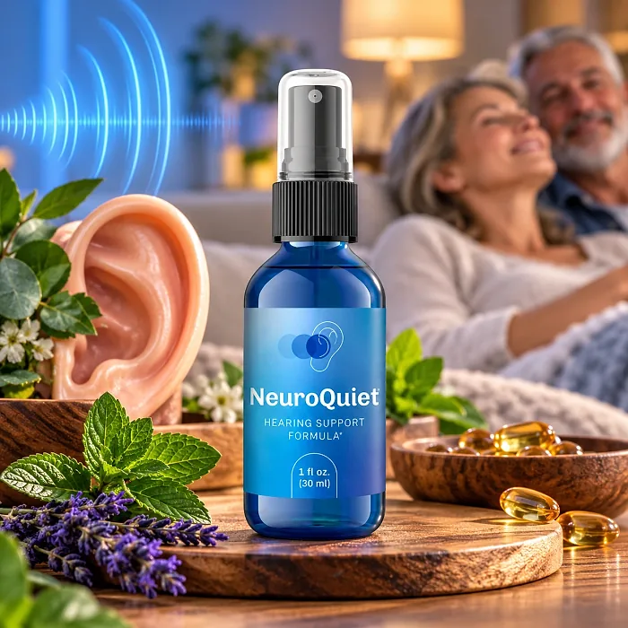
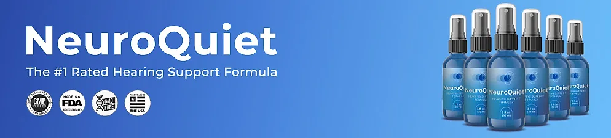

What Is NeuroQuiet And How Does It Work?
NeuroQuiet is a dietary supplement in an oral spray designed to support healthy hearing, a calmer mind, and clear thinking for adults who want to address the annoying background noise, stress, and mental fatigue that can build up with age and noisy routines through a natural, simple approach — without pills or complicated plans.
The label calls it a "Hearing Support Formula." It combines a Growth Factor Complex of Alpha-GPC, GABA, L-Dopa Bean, and Moomiyo with an amino acid blend that includes L-Arginine, L-Glutamine, L-Tyrosine, and branched-chain amino acids.
The idea behind the formula is that hearing depends on more than the ear itself: it also involves the nerves, blood flow, and the way the brain processes sound. According to the official website, Alpha-GPC and L-Tyrosine support cognitive function and neurotransmitter balance, GABA promotes relaxation, L-Arginine supports circulation, and Moomiyo supports overall vitality.
Rather than acting as a quick fix, NeuroQuiet focuses on daily support for the nervous system and circulation, working gradually alongside healthy routines to help maintain calm, focus, and ear wellness.
With consistent daily use, the customers quoted on the official website describe a clearer mind, more relaxation, and better sleep, especially when the spray is combined with good sleep, protection from loud noise, and regular check-ups.
In practical terms, NeuroQuiet is a 1 fl oz (30 ml) spray bottle with 30 servings of six sprays — a one-month supply that is used under the tongue.
According to the label, it is manufactured in the United States from foreign and domestic ingredients, and it contains no hormones. It is a dietary supplement, not a replacement for a hearing evaluation or any treatment prescribed by a doctor.
NeuroQuiet Ingredients
The Supplement Facts panel of NeuroQuiet lists two blends per serving of six sprays. The official website highlights six of their ingredients:
Alpha-GPC (Alpha Glyceryl Phosphoryl Choline): A source of choline that supports cognitive function and brain health.
GABA (Gamma-Aminobutyric Acid): A calming neurotransmitter associated with relaxation and stress relief.
L-Dopa Bean (whole plant): A bean, also known as mucuna, that is a natural source of L-Dopa, a precursor of dopamine.
Moomiyo (whole plant): A traditional resin-like substance, also called shilajit, used to support vitality.
L-Arginine: An amino acid that supports healthy blood circulation, including the small vessels of the ear.
L-Tyrosine: An amino acid that supports stress resilience and neurotransmitter balance.
On the label, the first four form the Growth Factor Complex (2000 ng), and the second blend (1000 ng) includes Ornithine Alpha Ketoglutarate, L-Glutamine, L-Arginine, L-Lysine, L-Valine, L-Isoleucine, L-Tyrosine, and Glycine. The amounts are given in nanograms, which are very small quantities, and the label does not show the amount of each ingredient.
The other ingredients are purified water, lecithin, phospholipids, sodium citrate, citric acid, potassium sorbate, maltodextrin, methylparaben, propylparaben, and natural and artificial flavors. That is worth noting, because the official website describes the formula as all-natural, while the label includes parabens and artificial flavors.
NeuroQuiet Side Effects
NeuroQuiet is generally considered well tolerated and is intended for adults who want a gentle, natural approach to hearing and nervous system support, using a spray instead of capsules.
According to the official website, the formula uses plant ingredients and natural minerals and is assembled in the United States, and the label states that it contains no hormones. The amounts listed on the label are very small, which also keeps the exposure low.
There are no widespread reports of serious side effects, but a few points deserve attention. L-Dopa Bean is a natural source of L-Dopa, so anyone who takes medication for Parkinson's, antidepressants, or other drugs that act on dopamine should talk to their doctor first. People sensitive to parabens or artificial flavors should read the label. Sudden hearing loss, ear pain, or ringing that comes with dizziness needs a doctor, not a supplement. It is not intended to diagnose, treat, cure, or prevent any disease, and individual results may vary.
Pregnant or nursing women, people under 18, and anyone with a medical condition or taking prescription medication should consult a physician before using NeuroQuiet. The label also asks you to keep the bottle out of the reach of children.
NeuroQuiet Dosage
The recommended NeuroQuiet dosage is six sprays a day, split between morning and night. There are no capsules to swallow and nothing to mix.
The directions printed on the label are specific: shake well and spray under the tongue, using 2 full sprays in the morning and 4 full sprays before bedtime. Hold the liquid for 20 seconds, then swallow. For maximum absorption, the label says not to eat or drink for 30 minutes before or after each use.
Each bottle holds 1 fl oz (30 ml), or 30 servings, which works as a one-month supply. The official website says the best results come with consistent use for 3 months or longer, which is why many people choose a longer routine.
The label advises keeping the bottle out of the reach of children, storing it in a cool, dry place, and not using it if the safety seal is damaged or missing.
As with any dietary supplement, do not exceed the recommended dose. NeuroQuiet works best as part of a routine that includes good sleep, protection from loud noise, and regular hearing check-ups.
NeuroQuiet – Refund Policy
NeuroQuiet comes with a 90-day, 100% money-back guarantee counted from the date of purchase, which gives buyers three months to try the spray and decide whether it fits their routine.
According to the return policy on the official website, a return authorization (RMA) must be requested and approved within 90 days of the purchase. After receiving it, you have 14 days to send the product back, at your own cost, with the RMA number, and to email the tracking number. The product must be in good physical condition. The order page adds that empty bottles are accepted and that the refund, minus shipping and handling fees, is issued within 48 hours of the product being returned.
How to request a refund: Email product support or call the toll-free line to request the RMA, then send the bottles to 19655 E 35th Dr #100, Aurora, CO 80011, USA.
Customer Support Contact Information: support@neuroquiet.com, as printed on the label, or +1 (877) 861-0092, open every day from 10 AM to 1 AM EST, as listed on the contact page.
Refund Processing Time: The order page promises the refund within 48 hours after the return arrives; how long it takes to show on your statement depends on your bank or card company.
The steps are published openly, which makes the NeuroQuiet refund policy easy to follow if the product is not for you.
NeuroQuiet Customer Reviews
-
William S. — North Carolina, USAVerified Purchase – 6 Bottles
“NeuroQuiet did wonders to support my hearing. I work as an audio engineer, so protecting my ears against noise is a must. Go for the 6-bottle pack - it's the best investment you'll ever make!”
-
Jason R. — Arizona, USAVerified Purchase – 6 Bottles
“My brain feels clearer and I can finally relax. Thank you, NeuroQuiet!”
-
Sabine G. — Texas, USAVerified Purchase – 6 Bottles
“I treasure my peace and quiet more than anything. So I'm well aware just how important the health of my ears is. Knowing that by taking NeuroQuiet I'm feeding my hearing these essential nutrients helps me sleep better at night. Definitely give this one a try.”
NeuroQuiet – Where To Buy
NeuroQuiet is sold through its official website, so if you decide to try it, it's important to be careful about where you purchase it. The official website is the only sales channel the manufacturer lists, and it does not point to marketplaces such as Amazon, eBay, or Walmart.
Listings on third-party platforms may look similar but cannot be verified as authentic, raising concerns about safety, quality, and ingredient freshness. Products purchased outside the official source may not be covered by the 90-day guarantee.
For this reason, most customers recommend purchasing NeuroQuiet only through the official website. Buying directly from the official source ensures you receive the authentic original product, with access to customer support and the full guarantee. According to the official website, every purchase is a one-time order, with no automatic renewals, hidden fees, or surprise charges.
To avoid counterfeit batches and ensure maximum quality, always verify that you are ordering from the official NeuroQuiet website before completing your purchase.
To ensure you’re getting the authentic product, most users choose to visit the official website.
Is NeuroQuiet A Scam?
Going by what the official website and the product label show, NeuroQuiet does not look like a scam. It is a real spray supplement with a published Supplement Facts panel, a distributor address in Aurora, Colorado, a support email, a phone line, and a written return policy.
There are fair points of criticism, though. The label lists its blends in nanograms (2000 ng and 1000 ng per serving), which are very small amounts. The official website calls the formula all-natural, but the label includes parabens and artificial flavors. And the sales page uses strong lines such as "silence it" and promises less noise, which go beyond what a dietary supplement can promise and beyond the label, which simply calls it a hearing support formula.
The label also shows a "Growth Factor Complex" and an "HGA Blend", names that are usually seen on other kinds of spray supplements, while it states that the product contains no hormones.
Customers quoted on the official website describe a clearer mind, more relaxation, and better sleep. Expectations should stay realistic: results vary from person to person, and no supplement replaces a hearing evaluation.
NeuroQuiet is backed by a 90-day money-back guarantee, and the official website says every order is a one-time payment, with no future charges. The return steps and the address are published in the return policy.
For adults who want a simple daily spray to support hearing, calm, and focus, NeuroQuiet is worth considering — ideally bought from the official website.
For those who want to verify product details or check current availability, the official NeuroQuiet website remains the safest option.

Check Availability On Official Website
